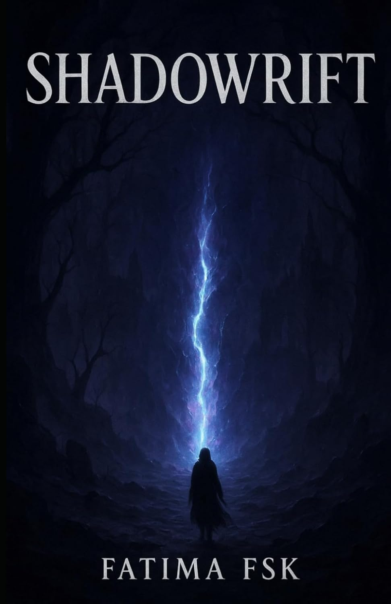

2025
Reflections
A journey inward — exploring identity, emotional patterns, resilience, cultural conditioning and the stories we inherit.
PKR 1,200
View on Amazon ↗Exploring identity, technology, emotional patterns and the possibilities that emerge when we begin to live deliberately.
I am Fatima FSK — an engineer by education, an operations leader by experience, and an author and speaker by purpose.
Computer Engineering
Consulting & Operations
Reflections & Shadowrift
Universities & Global Forums
Explore the inner world, question inherited narratives and discover what becomes possible when awareness replaces automatic thought.
Explore the Books →A journey inward — exploring identity, emotional patterns, resilience, cultural conditioning and the stories we inherit.

An exploration of the unseen patterns that shape how we think, live and become.
Writing on humanity, technology, leadership and conscious living — curated here as part of Fatima's permanent digital identity.
Technology can make systems more intelligent. But intelligence alone does not make them wise.
How increasingly capable systems reshape judgment, behaviour and responsibility.
Clarity of thought, ethical judgement and the human beings behind every decision.
The values required to guide increasingly intelligent systems deliberately.
Questioning inherited narratives and moving beyond automatic patterns.